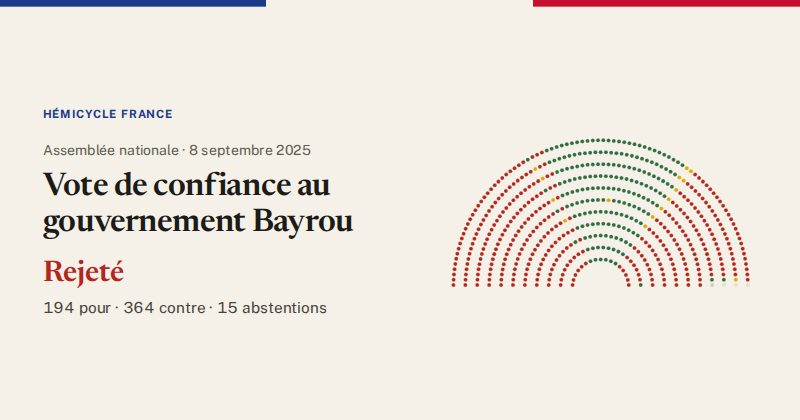

Assemblée nationale · scrutin n°3054 · 8 septembre 2025
Vote de confiance au gouvernement Bayrou
Rejeté
194pour
364contre
15abstentions

Le vote de chaque groupe
| Groupe | Pour | Contre | Abst. | Membres |
|---|---|---|---|---|
| La France insoumise (LFI-NFP) | 0 | 71 | 0 | 71 |
| GDR (communistes) | 0 | 17 | 0 | 17 |
| Écologiste et Social | 0 | 38 | 0 | 38 |
| Socialistes et apparentés | 0 | 66 | 0 | 66 |
| LIOT | 4 | 15 | 4 | 23 |
| Ensemble pour la République | 90 | 0 | 1 | 91 |
| Les Démocrates (MoDem) | 36 | 0 | 0 | 36 |
| Horizons & Indépendants | 34 | 0 | 0 | 34 |
| Droite Républicaine | 27 | 13 | 9 | 49 |
| UDR (Union des droites) | 0 | 15 | 0 | 15 |
| Rassemblement National | 0 | 123 | 0 | 123 |
| Non-inscrits | 3 | 6 | 1 | 11 |